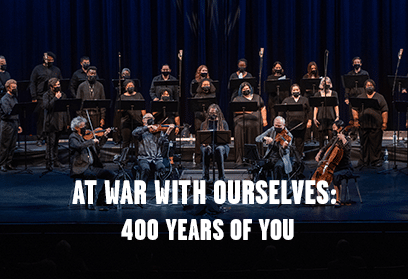

Back to discography

AT WAR WITH OURSELVES - 400 YEARS OF YOU
NIKKY FINNEY AND KRONOS QUARTET
Music by Michael Abels
Post-production
At War With Ourselves – 400 Years of You features a text by National Book Award-winning poet Nikky Finney inspired by her 2013 poem “The Battle of and for the Black Face Boy.” The music was composed by Michael Abels, composer for the Jordan Peele films Us and Get Out. This powerful new work for string quartet, narrator, and chorus explores race relations, social justice, and civil rights in 21st century America.